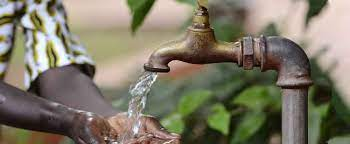

water jelly to risk deseases
facebook
twitter

hello from african.
pipeline water company
This is lack of water leads to death of animals and humans.
In my community there is no farming.
I released that in community we prolong drought that is there in my community
it affects me becouse many people are suffering and struggling to get water.
people lack food due to high death rates.It include animal,human being.
So me i have releasid that people
in mandera are lacking water.
Supply down water to my community using pipes that would help them against drought and also earning morney.
This is due to desatification that is affecting people who live in desert area.